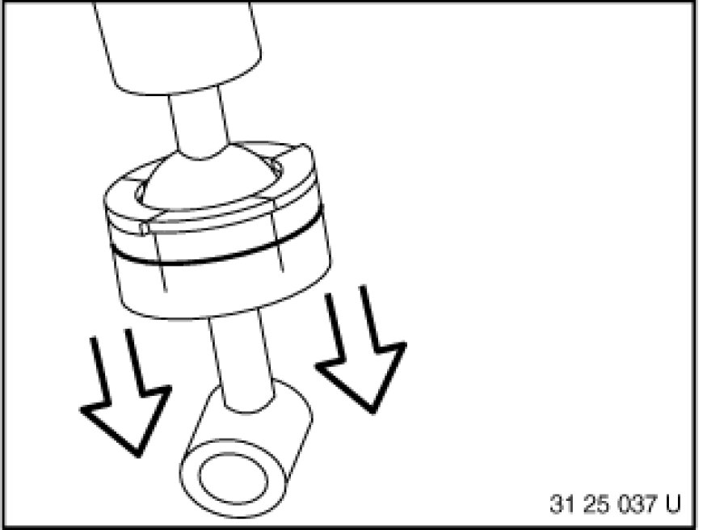
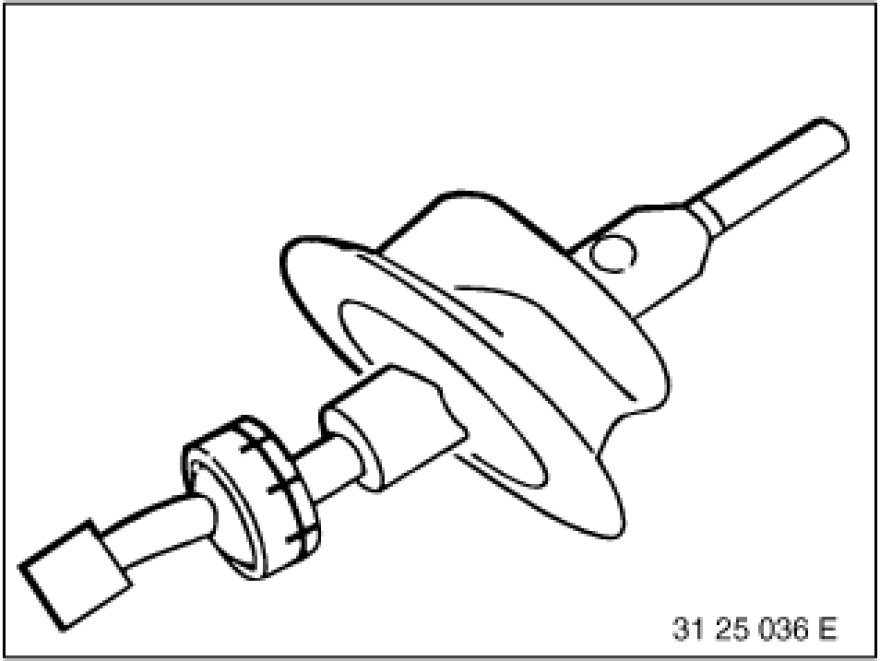
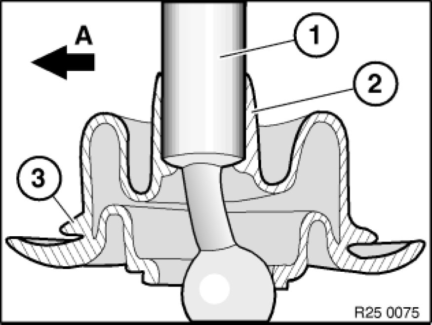

Replacing Complete Shift Lever
25 11 001 - Replacing complete shift lever

Necessary preliminary tasks:
- Remove selector lever Removing and Installing Shift Lever.
- Remove vibration damper (if fitted).

Detach mount from selector lever.
Installation:
Grease ball joint.
Grease,
refer to BMW Service Operating Fluids.

Detach rubber gaiter from selector lever.

Installation:
Degrease selector lever (1).
Coat rubber bellows on inside of shaped section (2) with Circolight.
Circolight,
refer to BMW Parts Service.
Pull rubber gaiter from above over selector lever and align. Arrow (3) on rubber gaiter must point in direction of travel (A).